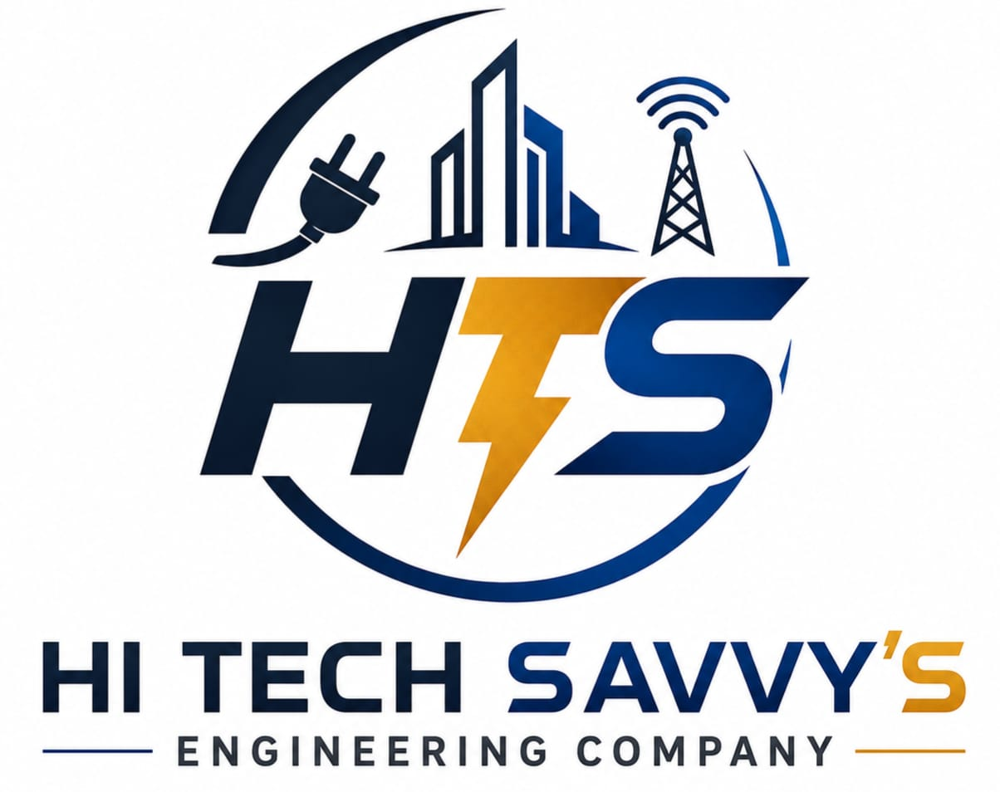

Renewable energy specialists
From solar installations to industrial UPS systems, we help homes and businesses stay powered and protected.

HI TECH SAVVY'SHI TECH SAVVY'S delivers eco-friendly electrical engineering, renewable energy and business continuity solutions across South Africa.
Request a QuoteFrom solar installations to industrial UPS systems, we help homes and businesses stay powered and protected.
Our practical, safety-first approach keeps every project focused on quality, reliability and long-term value.
We combine technical excellence with responsible energy choices that respect your operation and your budget.